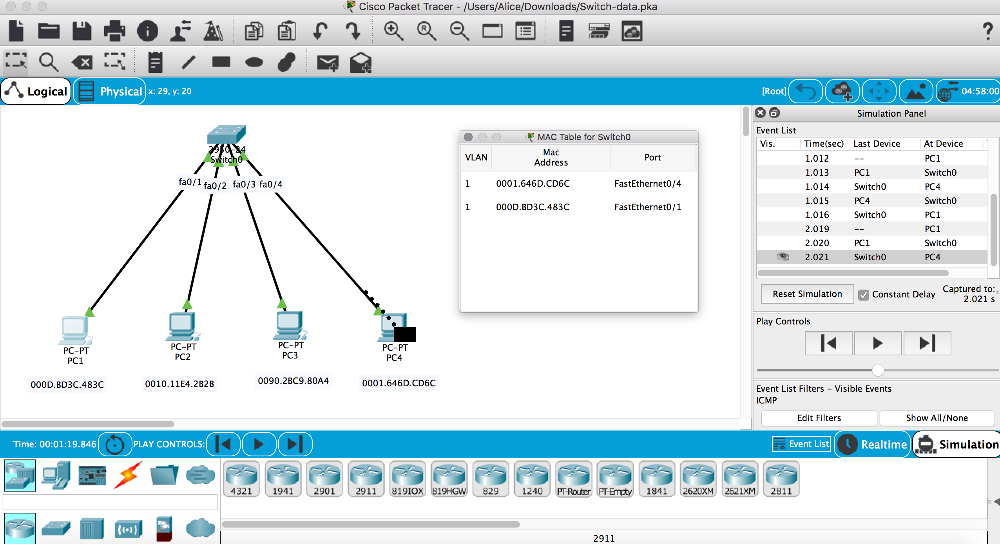

Basics of Web Design
網路設備：
- 路由器
- 交換器
- 集線器
- 無線AP
fa0/1 表示 slot/number → 第 0 個插槽的第 1 個 port。
集線器（hub）被當作終端的網路設備，但由於它傳輸效能差，因此目前很少在使用此種網路設備（是很不安全的傳送行為）。共享匯流排（shared bus），可視為資料傳送的通道，只有一個通道，通道共享。每一台電腦可存取匯流排，這種特性稱為共同存取(multiple access)。
網路傳送資料有三種機制：
- 單播傳送（unicast）：從來源端電腦只傳送資料給另一台電腦
- 廣播傳送（broadcast）：從來源端電腦傳送給所有電腦
- 群波傳送（multicast）：從來源端電腦傳送給選定的群組電腦
最常使用的是單播傳送，接著是廣播傳送，群播傳送很少使用。
集線器會有資料碰撞（collision）的問題，由於集線器上的資料匯流排（通道）是共用的，當有資料在集線器上傳送，此時又有其他 PC 往集線器送資料時，這時會有碰撞產生。
碰撞分為 Early collision 與 Late collisions，在傳送資料少於 512 bits 才發生碰撞稱為 Early collision ,大於 512 bits發生碰撞稱為 Late collisions。
CSMA / CD
CSMA - 是防止碰撞機制，PC4 要送出資料之前，要先用 CS 偵測到已經有資料在匯流排上傳遞，PC4 就先暫時不送出資料。 CD - 是偵測碰撞的機制，當碰撞快要發生前，會發出一個 JAM 的訊號（清空）。後退演算法會將兩台電腦下次送出的時間錯開。
交換器（switch）的前身為橋接器（bridge），一般橋接器有兩個 port，這兩個 port 切割兩個碰撞區域。
Mac table 作用 - 使用交換器可以做到資料只傳資料給一台電腦，這樣的傳送機制有效率而且安全，而 mac table 就是協助達成指傳送資料給目的電腦的機制。
一開始 mac table 是空的，交換器會維護電腦 mac 紀錄與對應的 port。
下面是 packet tracer 的截圖。隔了很久又再碰了這個軟體了。（正在試 mac table）
